Session 4 Exploring reaction time data
4.1 Laying out the data
In the last two sessions, we went over the steps of producing and refining visualizations in R using ggplot2. So far, we’ve been working with ratings, which we plotted using geom_bar() and geom_boxplot(), both well suited for plotting discrete variables, like ordinal and nominal data. Starting today, we will be working with a different type of data, namely reaction times, which are continuous in nature. For that, and building on the foundations we already have, we will explore some new visualization techniques as well as some new assumptions about data visualization itself. Let’s get started by getting to know our data and what it refers to.
Whereas in the first study we looked at the question of interest was how metaphors and metonomies are perceived in terms of their non-literal meaning, which we explored in terms of one of the properties investigated in the study, namely transparency, in the study we’re looking at today the question of interest is whether the semantic structure of an idiom, whether it’s metaphorical or metonymic or maybe even literal, might affect how it is processed in real time. Studies with a focus on online, or real time, processing investigate how people understand linguistic expressions as they are processed, for instance, in listening or reading, as opposed to how they might be interpreted in offline tasks where the time taken to react to or make a decision based on the linguistic stimuli is not the primary measure of interest.
In order to investigate their research question, Michl (2019b) used a reading task where participants were asked to read different types of idioms, presented to them in chunks. In addition to metaphors and metonomies, participants also read non-idiomatic expressions, which acted as controls for idiomaticity, as well as literal idiomatic expressions, that is, constructions which fall under a definition of idiomatic language but not under a definition of non-literal language. Let’s take a look at what the stimuli looked liked:
Metonomy - Diese Bücher | bezahlt Julia aus eigener Tasche | und das ist ärgerlich
- These books | pays Julia out of her own pocket (= Julia pays out of her own pocket) | and that is annoying
Control - Diese Bücher | schleppt Eva in der eigenen Tasche | und das ist ärgerlich
- These books | drags Eva insider her own bag | and that is annoying
Metaphor - Wieder einmal | beißt Katrin in den sauren Apfel | und stimmt allem zu
- Once more | bites Katrin the sour apple (= Katrin bites the bullet) | and agrees to everything
Control - Wieder einmal | wählt Katrin einen sauren Apfel | und stimmt allem zu
- Once more | picks Katrin a sour apple | and agrees to everything
Literal idiom - Bei dem Ausflug | bringt Stefan die Kinder in Gefahr | aber alle haben Spaß
- At the trip | brings Stefan the children in danger (= Stefan puts the children in danger) | but everyone has fun
Control - Bei dem Ausflug | sieht Stefan die Kinder in Gefahr | aber alle haben Spaß
- At the trip | sees Stefan the children in danger (= Stefan thinks the children are in danger) | but everyon has fun
Reading times were measured at each chunk of the read stimuli, such that the time taken to read the idiomatic chunks could be compared across different idiom types. The participants who took part in the study were also asked to complete an offline interpretation task, namely a rating task similar to the ones from the previous study. We will come back to the ratings next session. For now, let’s look at the reading times. Unlike the ratings study, which was exploratory in nature, in the reading study a specific hypothesis was tested. Let’s look at the predictions described in the paper, so that we can assess whether the data supports or contradicts the formulated hypothesis. The original text reads:
A general processing advantage is expected for idioms. If only idiomaticity (i.e. being an idiom and recognizable as such) matters, literal or nonliteral structure should not be reflected in processing speed; consequently, all idioms should be processed equally fast, regardless of whether they are literal, metonymic, or metaphoric, as long as length, familiarity, and comprehensibility are controlled for. If, however, the differing nonliteralness is processed or at least accessed in the idiom, literal idioms should be easiest to process, hence read the fastest, metaphors should be read the most slowly, while reading times for metonymies should be in-between. (Michl, 2019b, p. 1289)
In other words, we should expect to find reading time differences between the idiom types, such that the time taken to read the idiomatic chunk of an expression should vary as a function of its semantic structure, more literal idioms being processed faster than less literal ones. Notice that we’re in the case of a confirmatory analysis: either the data supports the prediction that more literal idioms are read faster, with systematic differences between all three idiom types, or it supports the alternative prediction that all idiom types are read alike, without any systematic differences between groups. All in all, we should expect a baseline difference between idioms and controls (non-idioms).
Let’s then plot our raw reading times (RTs from now on). Let’s start by plotting the entire response distribution, which might be helpful to understand what the underlying data actually consists of. First, let’s see how the corresponding variable is represented in R.
str(rts$RT)## num [1:7022] 937 808 1249 1085 826 ...As would be expected, our variable is a numeric vector containing the RTs recorded in the experiment. Each value in the vector corresponds to one measurement, that is, one sentence chunk of one particular item, as read by a particular participant in a given trial. Since we are dealing with interval data, let’s start with geoms which might be more appropriate for plotting continuous variables. One of these geoms is geom_density(), which plots a density distribution, a useful way of visualizing the shape of a distribution. Let’s call geom_density(), mapping the RTs onto the x-axis.
rts %>%
ggplot(aes(RT)) +
geom_density()
This plot only provides us with limited information, but looking at the raw distribution and understanding what it represents is a good starting point before we start grouping the data according to our variables of interest. As we can see, the RT distribution is right-skewed, which means that the bulk of responses is found closer to zero, the absolute minimum RT. While the mode of the distribution, its most common value, lies around 1000 ms, we can see that responses become rarer and more extreme as we move away from around 2000 ms towards larger values. We can assume that extreme values are not particularly representative of the actual population-level reading patterns, which is what we are interested in.
Another important point to take away from this plot, also related to its right skew, is that no response actually ever reaches zero, which has to do with what was measured in the experimental task, namely reaction times. In this particular case, we’re dealing with the time needed for a participant to trigger a reading segment and then to read whatever they were presented with in that segment. As such, RT measurements include the time needed to prepare and execute the motor action of pressing a button or key in order to trigger a reading chunk. What that means, in practical terms, is that even if a participant is extremely fast in reading a given sentence segment, the resulting measurement can only ever be so short, as it includes not only the time taken to read and process the linguistic stimulus per se but also the motor routines involved in initiating the presentation of the stimulus.
With those caveats in mind, let’s now use another geom, geom_histogram(), to produce a plot where we can inspect what our distribution is composed of. A histogram shows a distribution in terms of ‘bins’ of responses, where each bin contains a fixed number of observations. If we check the warning messaged produced by our geom_histogram() call, we see that ggplot2 gives us extra information about the binning of the data.
rts %>%
ggplot(aes(RT)) +
geom_histogram()## `stat_bin()` using `bins = 30`. Pick better value with `binwidth`.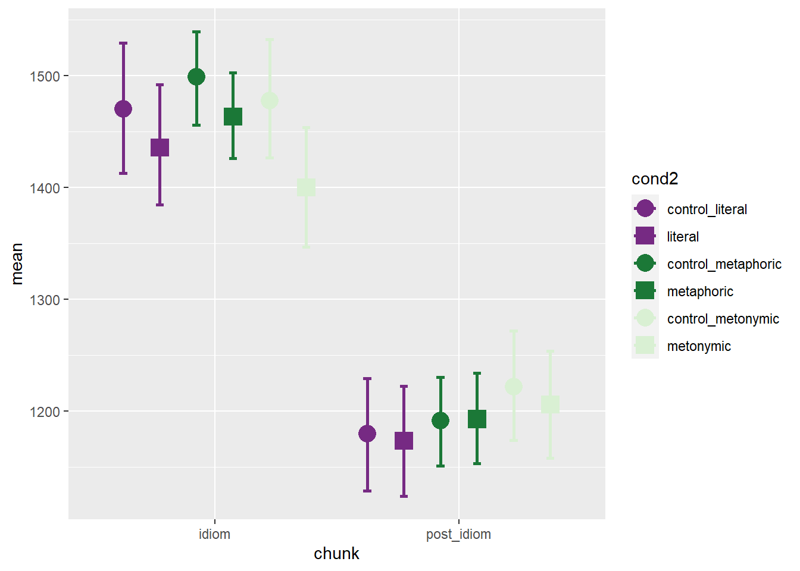
In this plot, the RT distribution is shown in terms bins of responses, where by default we get 30 bins, each containing whatever number of data points fall within that specific RT range. As the geom_histogram() documentation will tell us, we should always override the default width of the bins, exploring widths that best fit whatever we’re trying to explore and/ or communicate in our data. Let’s then set the binwidth argument within geom_histogram() to 100, meaning that we’re discretizing our empirical response distribution into response bins of 100 ms, which sounds like a reasonable range for now.
rts %>%
ggplot(aes(RT)) +
geom_histogram(binwidth = 100)
As we can see, our histogram now shows bins that contain data points that fill within a range of 100 ms, starting from zero. In order to highlight the binning of the data, let’s add a contour to each bin and let’s also increase the transparency of the plot.
rts %>%
ggplot(aes(RT)) +
geom_histogram(binwidth = 100, color = "black", alpha = .7)
This plot shows us roughly the same as our original density plot but in a way that it’s clearer what the actual number of values per fraction of the measurement scale is. Let’s now calculate the mean of the distribution, which is our preferred measure of central tendency for the data at hand, and let’s then overlay it to the plot to serve as a reference point.
mean(rts$RT)## [1] 1408.883Given that the mean response value is about 1400 ms, we could break our histogram into bins of 200 ms, such that each bin reflects a 1/7 step from the mean value. Both 100 and 200 ms are appropriate values, in fact practically any positive divisor of the mean would be, the important thing to notice here is that different bin widths are more or less reasonable depending on what we are trying to visualize. Since we’re just trying to get an overview of the data, either 100 or 200 ms will do.
rts %>%
ggplot(aes(RT)) +
geom_histogram(binwidth = 200, color = "black", alpha = .7) +
geom_vline(aes(xintercept = mean(RT, na.rm = TRUE)), color = "red",
linetype = "dashed", size = 1)
Our plot now shows both the grand mean, marked in red, as well the amount of responses that lie within +/- 200 ms increments of the mean, which is what is shown by the bins. Now that we have an overview of our response distribution, let’s move on to add information to the plot so that we can learn more about our main question of interest, which is whether there are differences between the means of the different idiom types. Let’s try to add that to our plot by specifying fill within our ggplot() call.
rts %>%
ggplot(aes(RT, fill = cond)) +
geom_histogram(binwidth = 200, color = "black", alpha = .7) +
geom_vline(aes(xintercept = mean(RT, na.rm = TRUE)), color = "red",
linetype = "dashed", size = 1)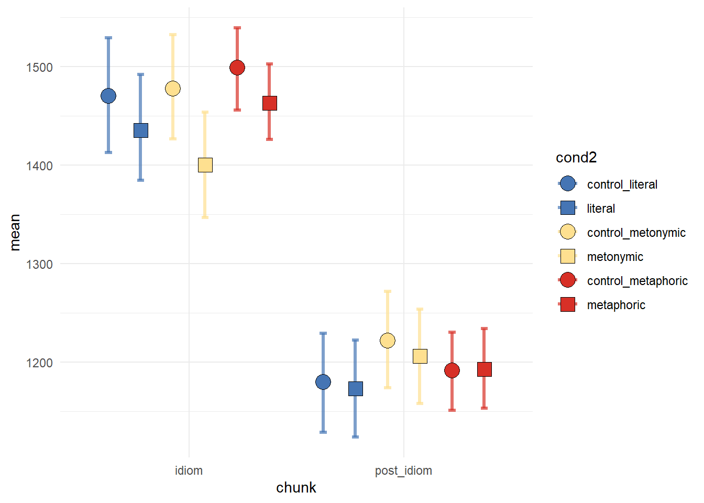
Here, we see the response distribution plotted in terms of the different expression types. At first glance, the graph seems to suggest that metaphors, in blue, were read more slowly than both metonomies and literal idioms, in purple and green, respectively. However, remember that what matters in this plot is not only the height of the stacked bars, which indicate the amount of responses for a given numerical range, but also where on the scale the bars lie. So, in short, by looking at this plot it’s practically impossible to tell, on average, which idiom type was read the slowest.
One thing we can do to help us visualize what we’re interested in is to instead plot the RTs on the y-axis, which allows us to map higher concentrations of bars high up on the y-axis to larger RTs. Let’s also plot our grand mean as a horizontal line.
rts %>%
ggplot(aes(y = RT, fill = cond)) +
geom_histogram(binwidth = 200, color = "black", alpha = .7) +
geom_hline(aes(yintercept = mean(RT, na.rm = TRUE)), color = "red",
linetype = "dashed", size = 1)
This is more helpful than what we had before, but perhaps instead of plotting a single response distribution, we might want to unstack the bars to help us a clearer visualization of our groups. Let’s then specify the position argument within our geom_histogram() call to plot the individual distributions of each expression type. Recall that in earlier sessions we used position_dodge to split stacked bars into horizontally aligned bars. Now, we’re using position_identity() to split the entire response distribution into overlapping distributions.
rts %>%
ggplot(aes(y = RT, fill = cond)) +
geom_histogram(binwidth = 200, color = "black", alpha = .7,
position = position_identity()) +
geom_hline(aes(yintercept = mean(RT, na.rm = TRUE)), color = "red",
linetype = "dashed", size = 1)
Note that the position adjustment argument takes both a function, as in the code above, or a string, as in the code below.
rts %>%
ggplot(aes(y = RT, fill = cond)) +
geom_histogram(binwidth = 200, color = "black", alpha = .7, position = "identity") +
geom_hline(aes(yintercept = mean(RT, na.rm = TRUE)), color = "red",
linetype = "dashed", size = 1)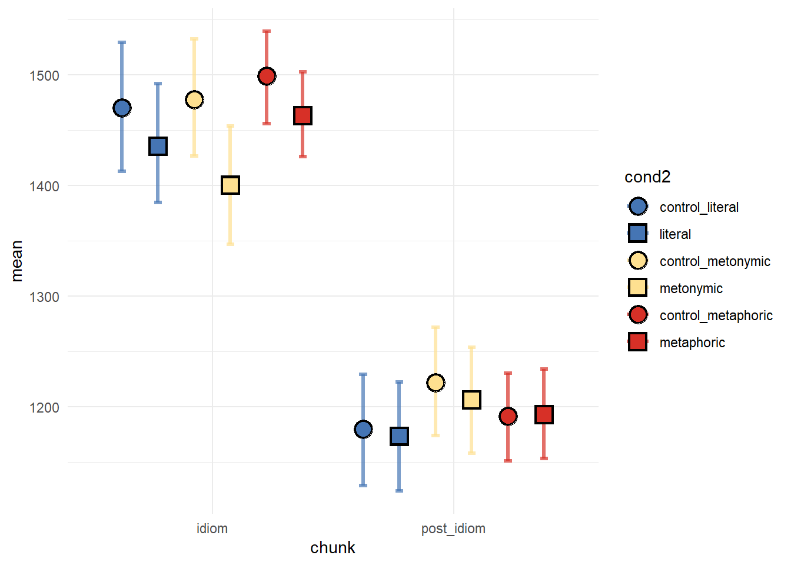
We now see all four expression distributions plotted one on top of the other. However, this is hardly more informative than our previous graph, given that with the visual overlap it’s hard to see the distributions plotted in the back. Let’s increase the transparency to see if it helps decluttering the plot.
rts %>%
ggplot(aes(y = RT, fill = cond)) +
geom_histogram(binwidth = 200, color = "black", alpha = .3, position = "identity") +
geom_hline(aes(yintercept = mean(RT, na.rm = TRUE)), color = "red",
linetype = "dashed", size = 1)
Even if we increase the transparency, it’s still hard to tell apart the overplotted groups. Let’s then try some alternative ways of plotting this data. First, let’s call our old acquaintance, facet_wrap().
rts %>%
ggplot(aes(y = RT, fill = cond)) +
geom_histogram(binwidth = 200, color = "black", alpha = .3, position = "identity") +
geom_hline(aes(yintercept = mean(RT, na.rm = TRUE)), color = "red",
linetype = "dashed", size = 1) +
facet_wrap( ~ cond)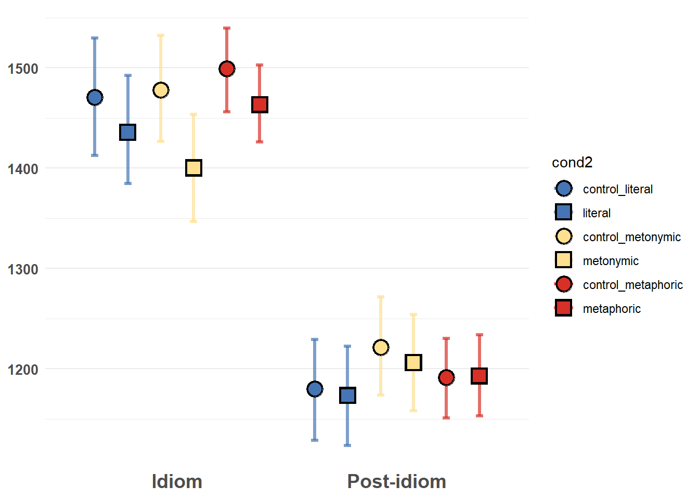
Here we can see, much better than before at least, what the actual group distributions look like. By eyeballing the data, it seems that metaphors are the idiom type that is read the slowest, followed by metonomies and literal idioms. We can tell that by roughly estimating the concentration of data points higher up on the RT scale, we’re in the realm of rough estimations here. Let’s calculate the actual group means and add those to the plot instead of the grand mean so as to have clearer reference points. Notice the usage of the group argument within geom_hline().
rts %>%
group_by(cond) %>%
summarize(mean(RT))## `summarise()` ungrouping output (override with `.groups` argument)## # A tibble: 4 x 2
## cond `mean(RT)`
## <chr> <dbl>
## 1 control 1429.
## 2 literal 1384.
## 3 metaphoric 1394.
## 4 metonymic 1385.rts <- rts %>%
group_by(cond) %>%
mutate(mean = mean(RT))
rts %>%
ggplot(aes(y = RT, fill = cond)) +
geom_histogram(binwidth = 200, color = "black", alpha = .3, position = "identity") +
geom_hline(aes(yintercept = mean, color = cond, group = cond),
linetype = "dashed", size = 1) +
facet_wrap( ~ cond)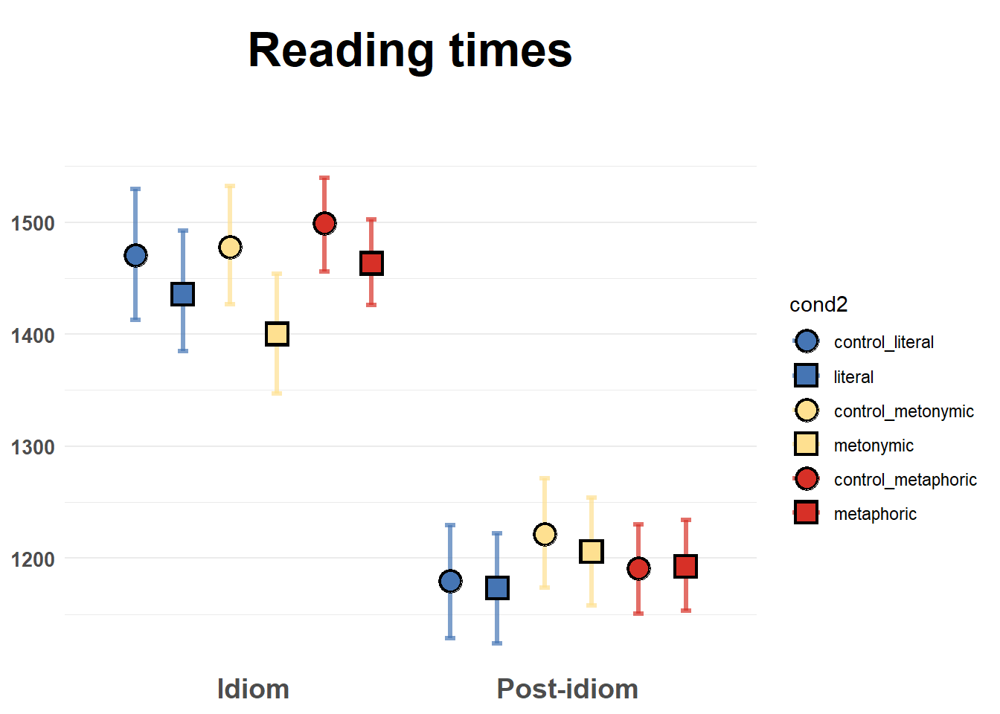
Even with the group means added to plot, it’s hard to tell what’s going on, and that is because the differences between means are quite small, as can be seen by inspecting the actual calculated values. What this means is that our plot is not particularly informative, despite our attempts to improve it. Let’s try plotting the data using another geom then. First, let’s use geoms we already know, like geom_boxplot(). We’ll keep mapping the RT to the y-axis and we’re now mapping idiom type to the x-axis.
rts %>%
ggplot(aes(cond, RT, fill = cond)) +
geom_boxplot()
This plot is not very informative either: it is hard to notice whether there are systematic differences between the groups, even though at this point we know already that there are small differences between the means. Also, as we know boxplots give us medians and interquartile ranges, and not what we are after, which are the means. We could add horizontal lines to the plot, much like we did above, indicating the respective group means, but what would only contribute to making the plot more convoluted and therefore less transparent. Instead, let’s try filtering out some of the data to see if we can notice any potential differences. Earlier we said that values above 2000 ms seemed to be outliers, which of course was a very rough estimation based on eyeballing the data. If we look at our boxplot, we see that the upper box whiskers reach around 3000 ms, meaning that anything above that is beyond 1.5 times the interquartile range. We can be quite certain that any value that far off from the median is not very representative, so let’s focus on RTs that are shorter than 3000 ms.
rts %>%
filter(RT < 3000) %>%
ggplot(aes(cond, RT, fill = cond)) +
geom_boxplot()
Even having filtered the data, the resulting plot is not much better: with some squinting it seems that the median for the controls is higher than that of the other groups, though we can’t really tell if there are any differences between the idioms. Let’s try a different approach: let’s use a geom_violin(), which, as we saw, was a useful way of combining a density plot with a boxplot. Instead of always having to filter out the relevant RT range using filter(), let’s create a new data frame called rts_filter which includes the filtered RTs.
rts_filter <- rts %>%
filter(RT < 3000)
rts_filter %>%
ggplot(aes(cond, RT, fill = cond)) +
geom_violin()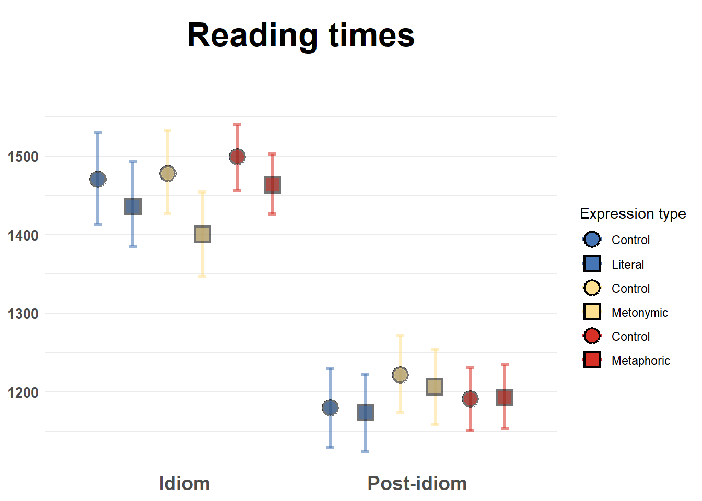
Again, not the most informative of plots, but here we get more detail about the density of responses at each section of the RT scale. If we look at the section between 1000 and 2000 ms, we see that controls and metaphors seem to have more of a spread, whereas literal idioms and metonomies seem to have a thicker concentration of data points around 1000 ms.
Since we’ve already noticed that the differences we’re interested in are quite minimal, we might want to use a graph that allows us to look at single points of interest, namely the means themselves, as opposed to whole distributions of response values. When reporting a summary statistic like a sample mean it’s also customary to show a measure of variability in the data, that is, a measure of how much the values in the sample diverge from the value represented by the summary statistic. In our case, we can rely on the middle 95% of the data, which we can then use to calculate a confidence interval. A confidence interval tells us, to a certain degree of certainty, what the plausible range of values for the population mean might be. That way, when plotting our means, we can also plot their confidence intervals, so that when comparing means we can have a better idea of whether their likely ranges overlap or not. Ultimately, this is important as we’re interested in inferring something about the larger population our empirical sample refers to.
Let’s then start by creating a new data frame called mean_RT which contains the summaries we want to plot, namely the group means. To that data frame, we will add the lower and upper limits of our confidence interval, which by convention usually correspond to the 2.5th and the 97.5th percentiles of the distribution. One thing we are going to do there is that we are going to simulate more samples based on our empirical distribution, so that the percentiles are based not only on the original sample but rather on an approximation of what the population distribution might be. This is called bootstrapping, and it is based on sampling the distribution with value replacement. Here we’re using a function called rep_sample_n() from the external package infer. What this function allows us to do is to resample our empirical distribution so that we can generate a number of new samples based on which we’re calculating our percentiles. Let’s draw 1000 samples. Let’s then plot the bootstrapped distribution to make sure it resembles, somewhat at least, our original response distribution.
mean_RT <- rts_filter %>%
group_by(cond) %>%
summarize(mean = mean(RT))## `summarise()` ungrouping output (override with `.groups` argument)bootstrapped_samples <- rts_filter %>%
infer::rep_sample_n(size = nrow(rts_filter), replace = TRUE, reps = 1000)
bootstrapped_mean_RT = bootstrapped_samples %>%
group_by(replicate, cond) %>%
summarize(boot_mean = mean(RT))## `summarise()` regrouping output by 'replicate' (override with `.groups` argument)bootstrapped_CI = bootstrapped_mean_RT %>%
group_by(cond) %>%
summarize(CILow = quantile(boot_mean, .025), CIHigh = quantile(boot_mean, .975))## `summarise()` ungrouping output (override with `.groups` argument)rts_filter %>%
ggplot(aes(RT)) +
geom_density() +
ggtitle("Empirical")
bootstrapped_samples %>%
ggplot(aes(RT)) +
geom_density() +
ggtitle("Bootstrapped")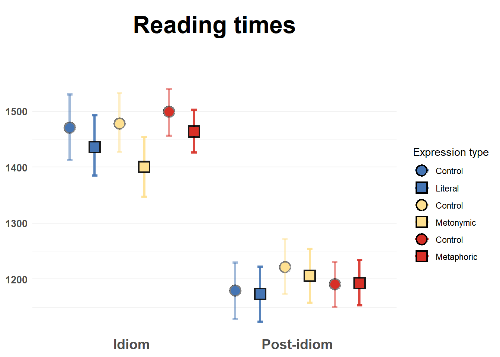
The two distributions have similar shapes. Still, you might be wondering why the bootstrapped distribution, which is based on 1000 samples, looks ‘worse’ than the empirical distribution, which is based on a single sample. That has to do with the fact that in the case of the bootstrapped distribution, given that we have many samples, we’re much more certain about the actual shape of the underlying response distribution, which is what a density plot allows us to visualize, that is, an estimation of the data generating distribution based on observed data.
Now, let’s combine our two data frames, mean_RT and bootstrapped_CI. Let’s then inspect the summaries and feed the data to a geom_point() call. Notice that, differently from what we did before in our course with bind_rows(), we’re not joining two data frames which have the exact same variables, where we’d simply be combining observations, but rather we’re joining two data frames which have different variables which need to be linked over a common variable, in our case cond. For that, we’re using the left_join() function from dplyr.
mean_CI_RT <- left_join(mean_RT, bootstrapped_CI)## Joining, by = "cond"mean_CI_RT## # A tibble: 4 x 4
## cond mean CILow CIHigh
## <chr> <dbl> <dbl> <dbl>
## 1 control 1340. 1321. 1360.
## 2 literal 1305. 1271. 1341.
## 3 metaphoric 1326. 1298. 1354.
## 4 metonymic 1303. 1270. 1338.mean_CI_RT %>%
ggplot(aes(cond, mean)) +
geom_point(aes(color = cond))What we have plotted here are the group means, without the respective confidence intervals for now, just so it’s clear that the two are plotted in different layers. It’s quite hard to notice the points, so let’s increase their size, and let’s add the confidence intervals using geom_errobar(). Notice how we specify the limits of our intervals using the ymin and ymax arguments.
mean_CI_RT %>%
ggplot(aes(cond, mean)) +
geom_errorbar(aes(ymin = CILow, ymax = CIHigh, color = cond), size = 1) +
geom_point(aes(color = cond), size = 5)Now we have the plot we wanted: we can see the group means with their respective bootstrapped confidence intervals. Visual inspection of the plot suggests that there are differences between the controls and the idiomatic expressions. Moreover, there seem to be differences between the different idiomatic expressions, literal idioms and metonomies being, on average, read faster than metaphor, which seem to be read almost as slow as controls. Now, one thing to notice here is that we’re plotting all RTs together, even though the measurements refer to different sentence segments. Recall that in the task participants read the expressions in chunks, as in Once more | Katrin bites the bullet | and agrees to everything, the idiomatic chunk being the main region of interest.
Let’s replot our data in terms of each sentence chunk. For that, we need to re-calculate the means grouping the data not only by expression type but also by reading chunk. Then, in the new plot, we’ll also need to dodge our points and their confidence intervals, otherwise they will be overplotted, as has happened before to us. Notice the argument in the position_dodge() calls.
mean_RT <- rts_filter %>%
group_by(cond, chunk) %>%
summarize(mean = mean(RT))## `summarise()` regrouping output by 'cond' (override with `.groups` argument)bootstrapped_mean_RT = bootstrapped_samples %>%
group_by(replicate, cond, chunk) %>%
summarize(boot_mean = mean(RT))## `summarise()` regrouping output by 'replicate', 'cond' (override with `.groups` argument)bootstrapped_CI = bootstrapped_mean_RT %>%
group_by(cond, chunk) %>%
summarize(CILow = quantile(boot_mean, .025), CIHigh = quantile(boot_mean, .975))## `summarise()` regrouping output by 'cond' (override with `.groups` argument)mean_CI_RT <- left_join(mean_RT, bootstrapped_CI)## Joining, by = c("cond", "chunk")mean_CI_RT %>%
ggplot(aes(chunk, mean)) +
geom_errorbar(aes(ymin = CILow, ymax = CIHigh, color = cond), size = 1,
position = position_dodge(.7)) +
geom_point(aes(color = cond), size = 5, position = position_dodge(.7))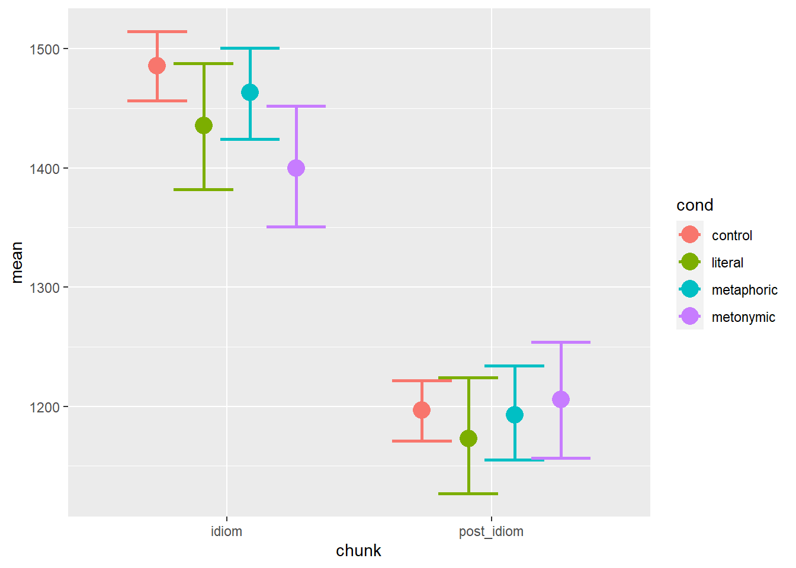
This is closer to what we actually want as a final product: we can see the mean RTs plotted in terms of both the sentence regions and the expression types. Visual inspection of the plot suggests that there are descriptive differences between the different expression types at each of the two plotted sentence regions. The pattern found in the aggregated data seems to map rather directly onto the pattern found in the idiom region, whereas in the post-idiom region there is more overlap between the conditions, indicating that any early effects of idiomaticity, especially in the case of metonomies, are evened out later in processing, once the idiomatic chunk has been processed. Let’s explore the data some more before deciding on a final plot.
4.2 Exploring the data
Let’s try plotting the means of each participant who took part in the study, to see the degree of individual variability we have in the data. First, we need to calculate the participant means. Then, can plot them using the code from above.
mean_RT_par <- rts_filter %>%
group_by(subj, cond, chunk) %>%
summarize(mean = mean(RT))## `summarise()` regrouping output by 'subj', 'cond' (override with `.groups` argument)bootstrapped_samples_par <- bootstrapped_samples %>%
group_by(subj, cond, chunk) %>%
summarize(boot_mean = mean(RT), CILow = quantile(RT, .025), CIHigh = quantile(RT, .975))## `summarise()` regrouping output by 'subj', 'cond' (override with `.groups` argument)mean_CI_RT_par <- left_join(mean_RT_par, bootstrapped_samples_par)## Joining, by = c("subj", "cond", "chunk")mean_CI_RT_par %>%
ggplot(aes(chunk, mean)) +
geom_errorbar(aes(ymin = CILow, ymax = CIHigh, color = cond),
position = position_dodge(.7)) +
geom_point(aes(color = cond), position = position_dodge(.7))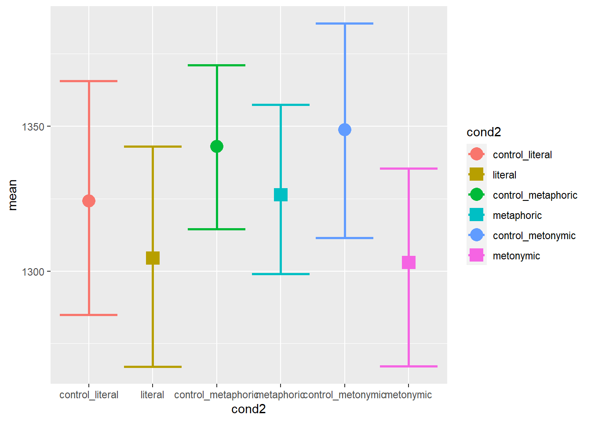
We can see that there’s variability in the data, but the plot is highly cluttered, so we’ll have to declutter it. This will involve reducing the width of the error bars as well as changing the size and color contrast of the points. Changing the width of the error bars as well as changing the size of the plotted points requires specifying arguments in ways we’re already familiar with. Now, in order to strike a good visual contrast between the points and the bars, let’s change the color argument within geom_point() to a fill and let’s add color separately, so as to make the contours of the points black. For that, we will need to specify a shape which allows us to change both its fill and its color. Notice also the usage of the group argument within the geom_point() call, which tells ggplot() that each plotted point is to be filled with a color according to its respective group of origin.
mean_CI_RT_par %>%
ggplot(aes(chunk, mean)) +
geom_errorbar(aes(ymin = CILow, ymax = CIHigh, color = cond),
position = position_dodge(.7), width = .1) +
geom_point(aes(fill = cond, group = cond), size = 2, shape = 21, color = "black", position = position_dodge(.7))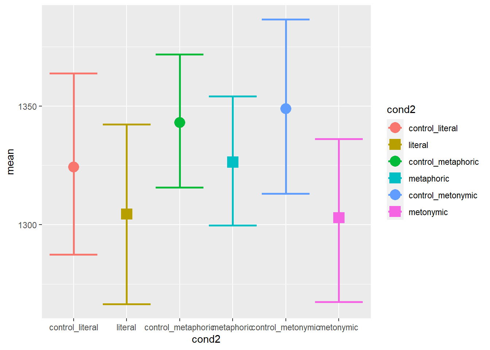
This is much better: there is still a lot of overlap between points but at least we can tell roughly where each individual mean is located. As was expected, participants vary considerably from one another in terms of their responses. Now let’s try to highlight the differences between expression types. For that, we’ll add lines connecting each group, which we will map back onto the x-axis. Let’s use facets to show the different reading segments.
mean_CI_RT_par %>%
ggplot(aes(cond, mean)) +
geom_line(aes(group = subj), size = .6, alpha = .6) +
geom_errorbar(aes(ymin = CILow, ymax = CIHigh, color = cond),
position = position_dodge(.7), width = .1) +
geom_point(aes(fill = cond, group = cond), size = 2, shape = 21, color = "black", position = position_dodge(.7)) +
facet_wrap(~ chunk)We can see that some people read the controls more slowly, with small differences between the idiomatic expressions, while others read certain types of idioms more slowly than the controls. In order to get a better picture of what the patterns might be for each participant, let’s facet them. Let’s aggregate the two sentence regions again, for now. Since we know we’re going to end up with more facets than we can fit within a single plot, let’s plot several graphs, each with seven participants, one per facet
mean_RT_par_nochunk <- rts_filter %>%
group_by(subj, cond) %>%
summarize(mean = mean(RT))## `summarise()` regrouping output by 'subj' (override with `.groups` argument)bootstrapped_samples_par_nochunk <- bootstrapped_samples %>%
group_by(subj, cond) %>%
summarize(boot_mean = mean(RT), CILow = quantile(RT, .025), CIHigh = quantile(RT, .975))## `summarise()` regrouping output by 'subj' (override with `.groups` argument)mean_CI_RT_par_nochunk <- left_join(mean_RT_par_nochunk, bootstrapped_samples_par_nochunk)## Joining, by = c("subj", "cond")mean_CI_RT_par_nochunk %>%
filter(subj <= 7) %>%
ggplot(aes(cond, mean)) +
geom_line(aes(group = subj), size = .6, alpha = .6) +
geom_errorbar(aes(ymin = CILow, ymax = CIHigh, color = cond),
position = position_dodge(.7), width = .1) +
geom_point(aes(fill = cond, group = cond), size = 2, shape = 21, color = "black", position = position_dodge(.7)) +
facet_wrap(~ subj)
mean_CI_RT_par_nochunk %>%
filter(subj > 7 & subj <= 14) %>%
ggplot(aes(cond, mean)) +
geom_line(aes(group = subj), size = .6, alpha = .6) +
geom_errorbar(aes(ymin = CILow, ymax = CIHigh, color = cond),
position = position_dodge(.7), width = .1) +
geom_point(aes(fill = cond, group = cond), size = 2, shape = 21, color = "black", position = position_dodge(.7)) +
facet_wrap(~ subj)
mean_CI_RT_par_nochunk %>%
filter(subj > 14 & subj <= 21) %>%
ggplot(aes(cond, mean)) +
geom_line(aes(group = subj), size = .6, alpha = .6) +
geom_errorbar(aes(ymin = CILow, ymax = CIHigh, color = cond),
position = position_dodge(.7), width = .1) +
geom_point(aes(fill = cond, group = cond), size = 2, shape = 21, color = "black", position = position_dodge(.7)) +
facet_wrap(~ subj)
mean_CI_RT_par_nochunk %>%
filter(subj > 21 & subj <= 28) %>%
ggplot(aes(cond, mean)) +
geom_line(aes(group = subj), size = .6, alpha = .6) +
geom_errorbar(aes(ymin = CILow, ymax = CIHigh, color = cond),
position = position_dodge(.7), width = .1) +
geom_point(aes(fill = cond, group = cond), size = 2, shape = 21, color = "black", position = position_dodge(.7)) +
facet_wrap(~ subj)
mean_CI_RT_par_nochunk %>%
filter(subj > 28 & subj <= 35) %>%
ggplot(aes(cond, mean)) +
geom_line(aes(group = subj), size = .6, alpha = .6) +
geom_errorbar(aes(ymin = CILow, ymax = CIHigh, color = cond),
position = position_dodge(.7), width = .1) +
geom_point(aes(fill = cond, group = cond), size = 2, shape = 21, color = "black", position = position_dodge(.7)) +
facet_wrap(~ subj)
mean_CI_RT_par_nochunk %>%
filter(subj > 35 & subj < 42) %>%
ggplot(aes(cond, mean)) +
geom_line(aes(group = subj), size = .6, alpha = .6) +
geom_errorbar(aes(ymin = CILow, ymax = CIHigh, color = cond),
position = position_dodge(.7), width = .1) +
geom_point(aes(fill = cond, group = cond), size = 2, shape = 21, color = "black", position = position_dodge(.7)) +
facet_wrap(~ subj)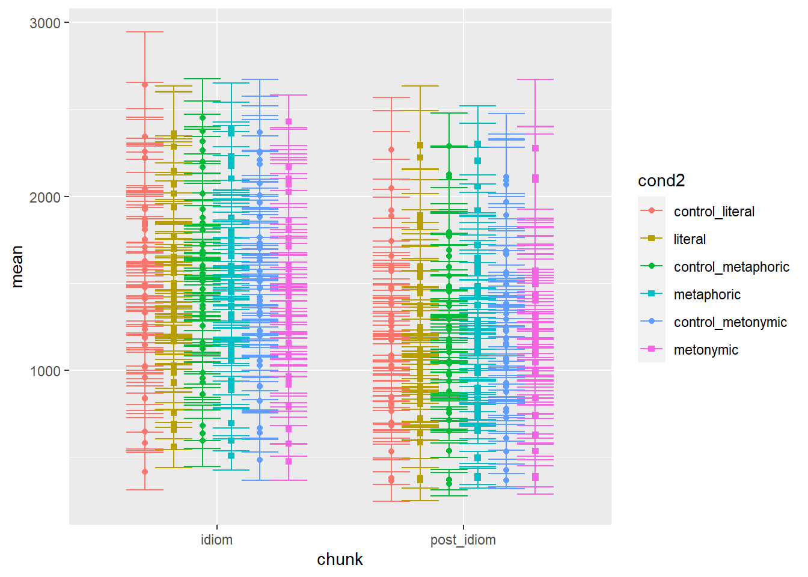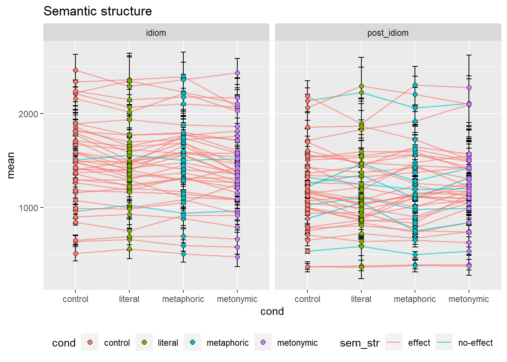
Again, we get a quite detailed picture of the amount of individual variation in the data. Participants vary considerably in the qualitative patterns they show but also on the time they take to read, as a whole. As it is, however, it’s hard to tell if there are any systematic differences between groups. We might want to combine this information about individual variation with the information about the aggregated means. Let’s overlay the group means to this plot. For that, we’ll need to duplicate our geom_errorbar() and geom_point() layers, feeding the data with the aggregated means to the new layers. Let’s also change the transparency of the individual means to highlight the group means.
mean_CI_RT_par %>%
ggplot(aes(chunk, mean)) +
geom_errorbar(aes(ymin = CILow, ymax = CIHigh, color = cond),
position = position_dodge(.7), width = .1, alpha = .2) +
geom_errorbar(data = mean_CI_RT, aes(ymin = CILow, ymax = CIHigh, color = cond),
width = .3, size = 1, alpha = .8, position = position_dodge(.7)) +
geom_point(aes(fill = cond, group = cond), size = 2, shape = 21,
color = "black", position = position_dodge(.7), alpha = .2) +
geom_point(data = mean_CI_RT, aes(fill = cond, group = cond), size = 3.5, shape = 21,
color = "black", position = position_dodge(.7), alpha = .9)
With this plot we get the whole picture: we can see the variation in the group means as well as well in the individual means. Still, the plot with only the aggregated means is more informative when it comes to our main question of interest, which is whether there are systematic differences between our idiomatic expressions.
4.3 Session summary
As we’ve seen in our last two sessions, geoms are what shape the type of graph one ends up with when using ggplot2. The single most important aspect of a geom is what type and number of variables its aesthetics support. We’ve seen examples of geoms that take one or two variables. In the case of geoms that support two variables, like
geom_boxplot(), we saw that these can consist either of two variables of the same type, be it continuous or discrete, or a combination of both. In order to produce a plot that renders the data correctly, one needs to understand how the plotted variables are coded in R, so that they match the variable type supported by the selected geom. One also needs to understand what the data corresponds to “in the wild”, that is, in terms of its original measurement type. This might impact how the data is plotted regardless of its actual representation in R. Knowing what variables a geom requires and whether one’s data matches those requirements is a good recipe for plotting data correctly;In order to explore data for the purposes of data analysis, we saw that a good starting point is with plots and visual representations of the data. Often times, however, one will need to wrangle the data in order to produce certain plots. In addition to wrangling, which can be done with the help of many specialized packages like tidyverse’s dplyr, one usually needs to summarize the data in different ways or to calculate different descriptive statistics on the basis of the raw data, which themselves can also added to plots in different ways. Exploring a data set will usually involve a combination of visualization, wrangling, and numerical/ statistical summarizing;
In order to enrich ggplot2’s base visualizations, one can make use of different aesthetic specifications. As we’ve seen, these include specifications which affect major elements of a plot, such as
fill,color, andalpha, geom-specific arguments likelwdorlinetype, but also arguments which affect minor elements of the plot such as the legend, the title, and the axes, usually specified within thetheme()layer. Importantly, as we will see later, where an aesthetic is specified can impact how the plots looks like: whatever is called within theggplot()function will affect all layers in a plot, while aesthetics called within specific geoms will only affect that geom’s layer. In addition to specifying aesthetics, using facets or varying the mapping of variables onto thex, ycoordinates can also help highlight certain contrasts in a graph;Plots can be exported from R using the function
ggsave(), which by default saves the last plotted graph.ggsave()takes the argumentswidthandheightwhich can be modified in order to change the dimensions of the saved plot.